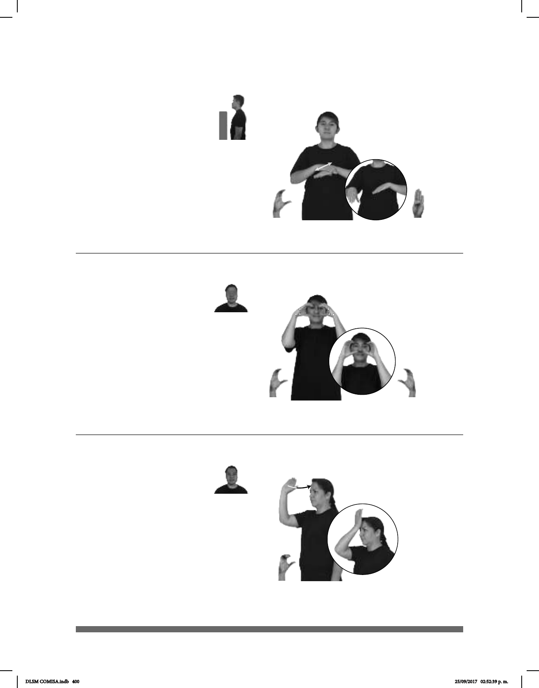

400
Seña: SB
MD C.1, MB
B-P.1
MD y MB palmas
hacia abajo.
MD sobre la muñeca de
MB y se desliza hacia sus dedos. MB a
la altura del pecho.
MD recto
repetidamente.
sust. m. Papel
moneda cuyo valor se distingue
por los números y los dibujos
generalmente de colores que se
imprimen en él.
(C-13)
_____________________________o.i.g
BILLETE CAMBIAR pro-TÚ PODER
¿Puedes cambiarme el billete?
(C-14)
Seña: SS
C.1
Palmas hacia el
centro.
A la altura de los ojos.
Las manos se
mueven de atrás hacia adelante
sust. m. Instrumento
óptico provisto de dos sistemas de
lentes ajustables, uno para cada ojo,
que sirve para ver de cerca algo que
se encuentra lejos; gemelos.
pro-YO YA COMPRAR BINOCULARES PARA VER ESTRELLA
Compré unos binoculares para ver las estrellas.
Seña: SM
C.3
La palma inicia hacia
afuera y termina hacia adentro.
A la altura de la frente.
La muñeca y el antebrazo
giran y la mano cambia de orientación.
sust. m. Mamífero rumiante
doméstico, cubierto de lana.
(C-15)
pos-MI ABUELO TENER MUCHO BORREGO
Mi abuelo tiene muchos borregos.
DLSM COMISA.indb 400 25/09/2017 02:52:39 p. m.